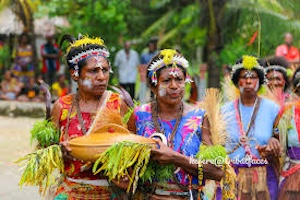
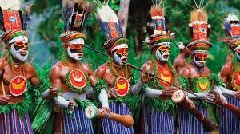
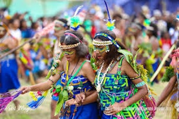

Welcome to Papua New Guinea!
Papua New Guinea (PNG) is known for its rich culture and diversity, home to over 800 languages and numerous unique traditions. This site aims to share the vibrant culture of Papua New Guinea, showcasing its tribes, festivals, food, and modern lifestyle.
  